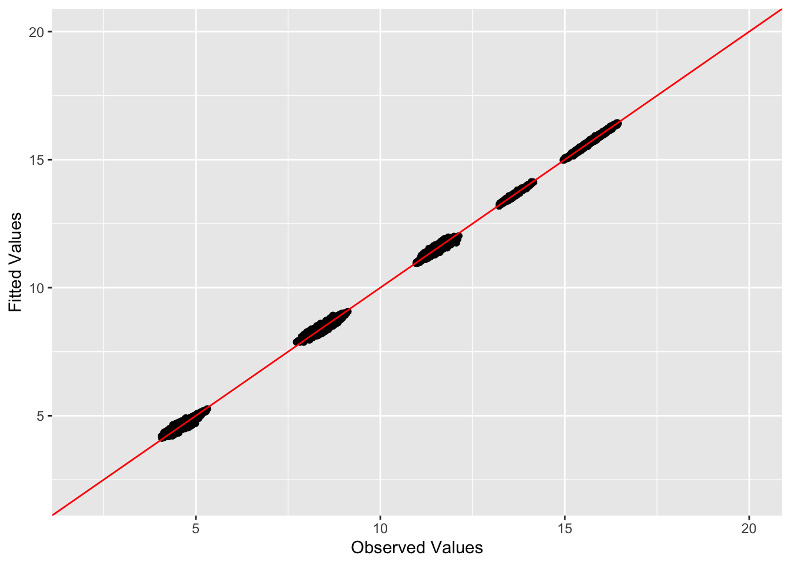
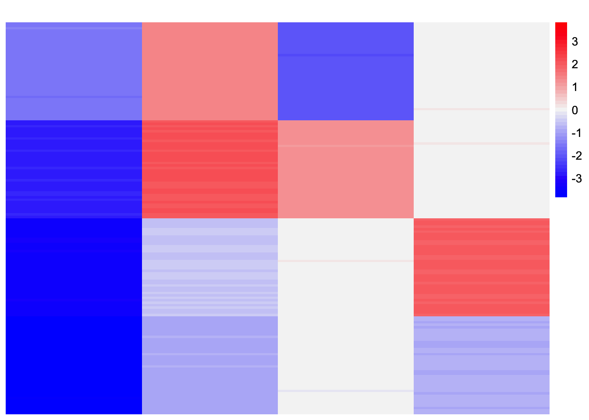

unbalanced_tree_analysis
Annie Xie
2025-09-05
Last updated: 2025-09-09
Checks: 7 0
Knit directory: covariance_decomps_dsc/
This reproducible R Markdown analysis was created with workflowr (version 1.7.1). The Checks tab describes the reproducibility checks that were applied when the results were created. The Past versions tab lists the development history.
Great! Since the R Markdown file has been committed to the Git repository, you know the exact version of the code that produced these results.
Great job! The global environment was empty. Objects defined in the global environment can affect the analysis in your R Markdown file in unknown ways. For reproduciblity it’s best to always run the code in an empty environment.
The command set.seed(20250203) was run prior to running
the code in the R Markdown file. Setting a seed ensures that any results
that rely on randomness, e.g. subsampling or permutations, are
reproducible.
Great job! Recording the operating system, R version, and package versions is critical for reproducibility.
Nice! There were no cached chunks for this analysis, so you can be confident that you successfully produced the results during this run.
Great job! Using relative paths to the files within your workflowr project makes it easier to run your code on other machines.
Great! You are using Git for version control. Tracking code development and connecting the code version to the results is critical for reproducibility.
The results in this page were generated with repository version ad2e7df. See the Past versions tab to see a history of the changes made to the R Markdown and HTML files.
Note that you need to be careful to ensure that all relevant files for
the analysis have been committed to Git prior to generating the results
(you can use wflow_publish or
wflow_git_commit). workflowr only checks the R Markdown
file, but you know if there are other scripts or data files that it
depends on. Below is the status of the Git repository when the results
were generated:
Ignored files:
Ignored: .DS_Store
Ignored: .Rhistory
Ignored: data/.DS_Store
Ignored: data/adclus_cov_comp_dsc_ex/.DS_Store
Ignored: data/adclus_same_init_dsc_ex/.DS_Store
Note that any generated files, e.g. HTML, png, CSS, etc., are not included in this status report because it is ok for generated content to have uncommitted changes.
These are the previous versions of the repository in which changes were
made to the R Markdown
(analysis/unbalanced_tree_analysis.Rmd) and HTML
(docs/unbalanced_tree_analysis.html) files. If you’ve
configured a remote Git repository (see ?wflow_git_remote),
click on the hyperlinks in the table below to view the files as they
were in that past version.
| File | Version | Author | Date | Message |
|---|---|---|---|---|
| Rmd | ad2e7df | Annie Xie | 2025-09-09 | Add exploration of GBCD in unbalanced tree setting |
Introduction
Something that I noticed in my unbalanced tree experiments is many methods missed the 3 vs 1 factor, and it seems like many methods actually modeled this via the baseline factor instead of two separate factors. In particular, the baseline factor would all be non-negative, but the loading values for the first group would be lower than the loading values for the other three groups. This is not entirely surprising as the generalized binary prior is made to be flexible and model more continuous types of variation. However, in this case, by modeling the data in that way, we miss some of the hierarchical structure.
So I wanted to try using a more strictly binary prior in this setting. My hope is that the strictly binary nature of the prior will cause the method to find the 3 vs 1 factor separately from the baseline factor. However, I can also imagine there are non-identifiability issues in this case as well, so we still may not get the desired factorization. Another piece of evidence for this problem being hard is the fact that SINDCLUS and SYMPRES struggled to find the correct factorization in this setting (and these methods do have the strict binary requirement). I’m also curious if methods designed to find trees, e.g. neighbor-joining perform better in this setting.
library(dplyr)
library(ggplot2)
library(pheatmap)
library(flashier)source('code/visualization_functions.R')Data Generation
Unbalanced Tree Example
sim_4pops_unbal_tree <- function(args) {
set.seed(args$seed)
n <- sum(args$pop_sizes)
p <- args$n_genes
FF <- matrix(rnorm(7 * p, sd = rep(args$branch_sds, each = p)), ncol = 7)
# if (args$constrain_F) {
# FF_svd <- svd(FF)
# FF <- FF_svd$u
# FF <- t(t(FF) * branch_sds * sqrt(p))
# }
# check if this is right!
LL <- matrix(0, nrow = n, ncol = 7)
LL[, 1] <- 1
LL[, 2] <- rep(c(1, 0, 0, 0), times = args$pop_sizes)
LL[, 3] <- rep(c(0, 1, 1, 1), times = args$pop_sizes)
LL[, 4] <- rep(c(0, 1, 0, 0), times = args$pop_sizes)
LL[, 5] <- rep(c(0, 0, 1, 1), times = args$pop_sizes)
LL[, 6] <- rep(c(0, 0, 1, 0), times = args$pop_sizes)
LL[, 7] <- rep(c(0, 0, 0, 1), times = args$pop_sizes)
E <- matrix(rnorm(n * p, sd = args$indiv_sd), nrow = n)
Y <- LL %*% t(FF) + E
YYt <- (1/p)*tcrossprod(Y)
return(list(Y = Y, YYt = YYt, LL = LL, FF = FF, K = ncol(LL)))
}sim_args = list(pop_sizes = rep(40, 4), n_genes = 1000, branch_sds = rep(2,7), indiv_sd = 1, seed = 1)
sim_data <- sim_4pops_unbal_tree(sim_args)This is a heatmap of the true loadings matrix:
plot_heatmap(sim_data$LL)GBCD
The first thing I will try is changing the scale
parameter in the generalized binary prior. The scale parameter refers to
the ratio \(\sigma/\mu\). If the ratio
is small, then the prior will be closer to a strictly binary prior.
ebnm_generalized_binary_fix_scale <- function(x, s, mode = 'estimate', g_init = NULL, fix_g = FALSE, output = ebnm_output_default(), control = NULL){
ebnm_gb_output <- ebnm::ebnm_generalized_binary(x = x, s = s,
mode = mode,
scale = 0.01,
g_init = g_init,
fix_g = fix_g,
output = output,
control = control)
return(ebnm_gb_output)
}unbal_tree_gbcd_fit <- gbcd::fit_gbcd(sim_data$Y, Kmax = 7,
prior = ebnm_generalized_binary_fix_scale, ldf_type = 'cov')[1] "Form cell by cell covariance matrix..."
user system elapsed
0.008 0.000 0.009
[1] "Initialize GEP membership matrix L..."
Adding factor 1 to flash object...
Wrapping up...
Done.
Adding factor 2 to flash object...
Adding factor 3 to flash object...
Adding factor 4 to flash object...
Adding factor 5 to flash object...
Factor doesn't significantly increase objective and won't be added.
Wrapping up...
Done.
Backfitting 4 factors (tolerance: 3.81e-04)...
Difference between iterations is within 1.0e+04...
Difference between iterations is within 1.0e+03...
Difference between iterations is within 1.0e+02...
Difference between iterations is within 1.0e+01...
Difference between iterations is within 1.0e+00...
Difference between iterations is within 1.0e-01...
Difference between iterations is within 1.0e-02...
--Maximum number of iterations reached!
Wrapping up...
Done.
Backfitting 4 factors (tolerance: 3.81e-04)...
Difference between iterations is within 1.0e+03...
Difference between iterations is within 1.0e+02...
Difference between iterations is within 1.0e+01...
Difference between iterations is within 1.0e+00...
Difference between iterations is within 1.0e-01...
Difference between iterations is within 1.0e-02...
Difference between iterations is within 1.0e-03...
Wrapping up...
Done.
Backfitting 4 factors (tolerance: 3.81e-04)...
Difference between iterations is within 1.0e+00...
Difference between iterations is within 1.0e-01...
Difference between iterations is within 1.0e-02...
Difference between iterations is within 1.0e-03...
Wrapping up...
Done.
user system elapsed
2.264 0.071 2.341
[1] "Estimate GEP membership matrix L..."
Backfitting 7 factors (tolerance: 3.81e-04)... Difference between iterations is within 1.0e+03... Difference between iterations is within 1.0e+02... Difference between iterations is within 1.0e+01... Difference between iterations is within 1.0e+00... --Maximum number of iterations reached!
Wrapping up...
Done.
Backfitting 7 factors (tolerance: 3.81e-04)... Difference between iterations is within 1.0e+02... Difference between iterations is within 1.0e+01... --Maximum number of iterations reached!
Wrapping up...
Done.
Backfitting 7 factors (tolerance: 3.81e-04)... Difference between iterations is within 1.0e+00... --Maximum number of iterations reached!
Wrapping up...
Done.
user system elapsed
11.746 0.197 11.982
[1] "Estimate GEP signature matrix F..."
Backfitting 7 factors (tolerance: 2.38e-03)...
--Estimate of factor 6 is numerically zero!
--Maximum number of iterations reached!
Wrapping up...
Done.
user system elapsed
18.056 0.493 18.609 This is a heatmap of the estimated loadings:
plot_heatmap(unbal_tree_gbcd_fit$L)This is a heatmap of the estimated Gram matrix:
est_gram <- tcrossprod(unbal_tree_gbcd_fit$L %*% diag(unbal_tree_gbcd_fit$D))
plot_heatmap(est_gram)This is a heatmap of the observed Gram matrix:
plot_heatmap(sim_data$YYt)compute_L2_fit <- function(est, dat){
score <- sum((dat - est)^2) - sum((diag(dat) - diag(est))^2)
return(score)
}This is the squared difference of the (off-diagonal elements of the) estimated and observed gram matrix:
compute_L2_fit(est_gram, sim_data$YYt)[1] 108.0522This is a plot of the (off-diagonal values of the) observed values and the fitted values:
diag_idx <- seq(1, prod(dim(sim_data$YYt)), length.out = ncol(sim_data$YYt))
off_diag_idx <- setdiff(c(1:prod(dim(sim_data$YYt))), diag_idx)
ggplot(data = NULL, aes(x = c(sim_data$YYt)[off_diag_idx], y = c(est_gram)[off_diag_idx])) + geom_point() + ylim(2, 20) + xlim(2,20) + xlab('Observed Values') + ylab('Fitted Values') + geom_abline(slope = 1, intercept = 0, color = 'red')
The method still does not find the 3 vs 1 component as a separate component. Furthermore, it finds another 3 vs 1 component which is not part of the true data-generating process. It also finds a 2 vs 2 component which is not part of the true data-generating process (the other 2 vs 2 component is). However, we see that the estimated loadings still has a good fit to the observed Gram matrix.
I wonder if the point-Laplace initialization is able to find the tree in this case. Given the results of GBCD, I suspect that this merging of the baseline and the 3 vs 1 factor may stem from there since the point-Laplace fit is not encouraged to be trinary.
point-Laplace fit
flash_laplace_fit <- flash_init(sim_data$YYt) %>%
flash_greedy(Kmax = 7, ebnm_fn = ebnm::ebnm_point_laplace) %>%
flash_backfit() %>%
flash_nullcheck()Adding factor 1 to flash object...
Adding factor 2 to flash object...
Adding factor 3 to flash object...
Adding factor 4 to flash object...
Adding factor 5 to flash object...
Factor doesn't significantly increase objective and won't be added.
Wrapping up...
Done.
Backfitting 4 factors (tolerance: 3.81e-04)...
Difference between iterations is within 1.0e+04...
Difference between iterations is within 1.0e+03...
Difference between iterations is within 1.0e+02...
Difference between iterations is within 1.0e+01...
Difference between iterations is within 1.0e+00...
Difference between iterations is within 1.0e-01...
Difference between iterations is within 1.0e-02...
Difference between iterations is within 1.0e-03...
--Maximum number of iterations reached!
Wrapping up...
Done.
Nullchecking 4 factors...
Done.flash_laplace_fit_scaled <- ldf(flash_laplace_fit)
flash_laplace_fit_scaled_L <- flash_laplace_fit_scaled$L %*% diag(sqrt(flash_laplace_fit_scaled$D))This is a heatmap of the estimated loadings:
plot_heatmap(flash_laplace_fit_scaled_L, colors_range = c('blue','gray96','red'), brks = seq(-max(abs(flash_laplace_fit_scaled_L)), max(abs(flash_laplace_fit_scaled_L)), length.out = 50))
This is the ELBO:
flash_laplace_fit$elbo[1] 19117.86The point-Laplace fit finds the 2 vs 2 split and the corresponding 1 vs 1 split. It seems like the baseline factor and the 3 vs 1 split are being captured by two factors: the first is a baseline-like factor that has higher loading for three of the four groups and the second is a 1 vs 1 factor. This representation is sparser than the tree representation, so I suspect the method may prefer this over the tree. I also wonder if the point-Laplace fit finds this representation because the leaves are not equidistant from the root (the baseline).
To test if the point-Laplace prior prefers this representation, I try initializing the point-Laplace fit from the “true representation” (translated into the point-Laplace space).
point-Laplace fit initialized with true values
n <- ncol(sim_data$YYt)
true_L <- cbind(rep(1, n),
rep(c(1, -1), times = c(n/4, 3*n/4)),
rep(c(0, 1, -1), times = c(n/4, n/4, n/2)),
rep(c(0, 1, -1), times = c(n/2, n/4, n/4))
)
true_L_scaled <- true_L %*% diag(rep(2, 4))This is a heatmap of the loadings we are trying to recover:
plot_heatmap(true_L_scaled, colors_range = c('blue','gray96','red'))flash_laplace_fit_true_init <- flash_init(sim_data$YYt) %>%
flash_factors_init(list(true_L_scaled, true_L_scaled), ebnm_fn = ebnm::ebnm_point_laplace) %>%
flash_backfit() %>%
flash_nullcheck()Backfitting 4 factors (tolerance: 3.81e-04)...
Difference between iterations is within 1.0e+04...
Difference between iterations is within 1.0e+03...
Difference between iterations is within 1.0e+02...
Difference between iterations is within 1.0e+01...
Difference between iterations is within 1.0e+00...
Difference between iterations is within 1.0e-01...
Difference between iterations is within 1.0e-02...
--Maximum number of iterations reached!
Wrapping up...
Done.
Nullchecking 4 factors...
Done.flash_laplace_fit_true_init_scaled <- ldf(flash_laplace_fit_true_init)
flash_laplace_fit_true_init_scaled_L <- flash_laplace_fit_true_init_scaled$L %*% diag(sqrt(flash_laplace_fit_true_init_scaled$D))This is a heatmap of the estimated loadings:
plot_heatmap(flash_laplace_fit_true_init_scaled_L, colors_range = c('blue','gray96','red'), brks = seq(-max(abs(flash_laplace_fit_true_init_scaled_L)), max(abs(flash_laplace_fit_true_init_scaled_L)), length.out = 50))
This is the ELBO:
flash_laplace_fit_true_init$elbo[1] 18812.39It doesn’t move too far from the initial values. However, the ELBO for this solution is lower than the ELBO for the previous solution. So there appears to be a convergence issue with this solution. Let’s try more backfitting.
Try more backfitting
flash_laplace_fit_true_init <- flash_backfit(flash_laplace_fit_true_init,
maxiter = 1000,
tol = 10^(-10))Backfitting 4 factors (tolerance: 1.00e-10)...
Difference between iterations is within 1.0e-02...
Difference between iterations is within 1.0e-03...
Difference between iterations is within 1.0e-04...
Difference between iterations is within 1.0e-05...
Difference between iterations is within 1.0e-06...
Difference between iterations is within 1.0e-07...
Wrapping up...
Done.flash_laplace_fit_true_init_scaled <- ldf(flash_laplace_fit_true_init)
flash_laplace_fit_true_init_scaled_L <- flash_laplace_fit_true_init_scaled$L %*% diag(sqrt(flash_laplace_fit_true_init_scaled$D))This is heatmap of the estimated loadings:
plot_heatmap(flash_laplace_fit_true_init_scaled_L, colors_range = c('blue','gray96','red'), brks = seq(-max(abs(flash_laplace_fit_true_init_scaled_L)), max(abs(flash_laplace_fit_true_init_scaled_L)), length.out = 50))This is the ELBO:
flash_laplace_fit_true_init$elbo[1] 19392.12We see that with more backfitting, the method moves away from this unbalanced tree solution. I’m guessing the method prefers this representation because it is more sparse.
Divergence prior fit
I was curious how a more strict prior would work in this setting. In Jason’s thesis, he presented what he called the “divergence prior”: a prior that was a negative number, zero, and a positive number.
Note that in Jason’s thesis, he cautioned against using this prior because it is more prone to getting stuck in local optima. Given the non-identifiability issues in the tree setting, I think it’s possible we may not get the desired tree representation.
# Jason's code from his thesis chapter on trees
ebnm_div <- function(x, s, g_init, fix_g, output, admix = FALSE) {
if (!fix_g) {
opt_fn <- function(par) {
lambda <- exp(par[1])
nu <- exp(par[2])
if (admix) {
g <- ashr::unimix(rep(1/4, 4), c(0, -nu, -nu, lambda), c(0, -nu, lambda, lambda))
} else {
g <- ashr::unimix(rep(1/3, 3), c(0, -nu, lambda), c(0, -nu, lambda))
}
ebnm_res <- ebnm::ebnm_ash(
x,
s,
g_init = g,
fix_g = FALSE,
output = "log_likelihood"
)
return(-ebnm_res$log_likelihood)
}
opt_res <- optim(
par = c(log(max(c(1, x))), log(max(c(1, -x)))),
fn = opt_fn,
method = "L-BFGS-B"
)
lambda <- exp(opt_res$par[1])
nu <- exp(opt_res$par[2])
if (admix) {
g_init <- ashr::unimix(rep(1/4, 4), c(0, -nu, -nu, lambda), c(0, -nu, lambda, lambda))
} else {
g_init <- ashr::unimix(rep(1/3, 3), c(0, -nu, lambda), c(0, -nu, lambda))
}
}
return(ebnm::ebnm_ash(x, s, g_init = g_init, fix_g = fix_g, output = output))
}flash_div_fit <- flash_init(sim_data$YYt) %>%
flash_greedy(Kmax = 4, ebnm_fn = ebnm_div) %>%
flash_backfit() %>%
flash_nullcheck()Adding factor 1 to flash object...
Adding factor 2 to flash object...
Adding factor 3 to flash object...
Adding factor 4 to flash object...
Wrapping up...
Done.
Backfitting 4 factors (tolerance: 3.81e-04)...
Difference between iterations is within 1.0e+03...
Difference between iterations is within 1.0e+02...
Difference between iterations is within 1.0e+01...
Difference between iterations is within 1.0e+00...
Difference between iterations is within 1.0e-01...
Difference between iterations is within 1.0e-02...
Difference between iterations is within 1.0e-03...
Wrapping up...
Done.
Nullchecking 4 factors...
Done.flash_div_fit_scaled <- ldf(flash_div_fit)
flash_div_fit_scaled_L <- flash_div_fit_scaled$L %*% diag(sqrt(flash_div_fit_scaled$D))This is a heatmap of the estimated loadings:
plot_heatmap(flash_div_fit_scaled_L, colors_range = c('blue','gray96','red'), brks = seq(-max(abs(flash_div_fit_scaled_L)), max(abs(flash_div_fit_scaled_L)), length.out = 50))This is the ELBO:
flash_div_fit$elbo[1] -22839.38The method does not find the desired tree representation. As I mentioned before, I do not find this result entirely surprising due to convergence issues with the prior and non-identifiability issues with the tree setting.
sessionInfo()R version 4.3.2 (2023-10-31)
Platform: aarch64-apple-darwin20 (64-bit)
Running under: macOS 15.6
Matrix products: default
BLAS: /Library/Frameworks/R.framework/Versions/4.3-arm64/Resources/lib/libRblas.0.dylib
LAPACK: /Library/Frameworks/R.framework/Versions/4.3-arm64/Resources/lib/libRlapack.dylib; LAPACK version 3.11.0
locale:
[1] en_US.UTF-8/en_US.UTF-8/en_US.UTF-8/C/en_US.UTF-8/en_US.UTF-8
time zone: America/Chicago
tzcode source: internal
attached base packages:
[1] stats graphics grDevices utils datasets methods base
other attached packages:
[1] flashier_1.0.56 ebnm_1.1-34 pheatmap_1.0.12 ggplot2_3.5.2
[5] dplyr_1.1.4 workflowr_1.7.1
loaded via a namespace (and not attached):
[1] tidyselect_1.2.1 viridisLite_0.4.2 farver_2.1.2
[4] fastmap_1.2.0 lazyeval_0.2.2 promises_1.3.3
[7] digest_0.6.37 lifecycle_1.0.4 processx_3.8.4
[10] invgamma_1.1 magrittr_2.0.3 compiler_4.3.2
[13] rlang_1.1.6 sass_0.4.10 progress_1.2.3
[16] tools_4.3.2 yaml_2.3.10 data.table_1.17.6
[19] knitr_1.50 labeling_0.4.3 prettyunits_1.2.0
[22] htmlwidgets_1.6.4 scatterplot3d_0.3-44 RColorBrewer_1.1-3
[25] Rtsne_0.17 withr_3.0.2 purrr_1.0.4
[28] grid_4.3.2 git2r_0.33.0 fastTopics_0.6-192
[31] colorspace_2.1-1 scales_1.4.0 gtools_3.9.5
[34] cli_3.6.5 rmarkdown_2.29 crayon_1.5.3
[37] generics_0.1.4 RcppParallel_5.1.10 rstudioapi_0.16.0
[40] httr_1.4.7 pbapply_1.7-2 cachem_1.1.0
[43] stringr_1.5.1 splines_4.3.2 parallel_4.3.2
[46] softImpute_1.4-3 vctrs_0.6.5 Matrix_1.6-5
[49] jsonlite_2.0.0 callr_3.7.6 hms_1.1.3
[52] mixsqp_0.3-54 ggrepel_0.9.6 irlba_2.3.5.1
[55] horseshoe_0.2.0 trust_0.1-8 plotly_4.11.0
[58] jquerylib_0.1.4 tidyr_1.3.1 glue_1.8.0
[61] ps_1.7.7 cowplot_1.1.3 uwot_0.2.3
[64] gbcd_0.2-17 stringi_1.8.7 Polychrome_1.5.1
[67] gtable_0.3.6 later_1.4.2 quadprog_1.5-8
[70] tibble_3.3.0 pillar_1.10.2 htmltools_0.5.8.1
[73] truncnorm_1.0-9 R6_2.6.1 rprojroot_2.0.4
[76] evaluate_1.0.4 lattice_0.22-6 RhpcBLASctl_0.23-42
[79] SQUAREM_2021.1 ashr_2.2-66 httpuv_1.6.15
[82] bslib_0.9.0 Rcpp_1.0.14 deconvolveR_1.2-1
[85] whisker_0.4.1 xfun_0.52 fs_1.6.6
[88] getPass_0.2-4 pkgconfig_2.0.3